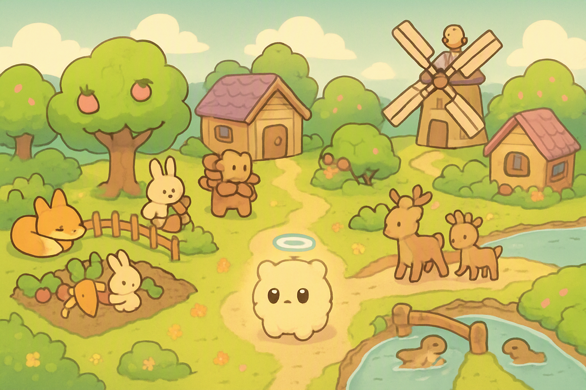
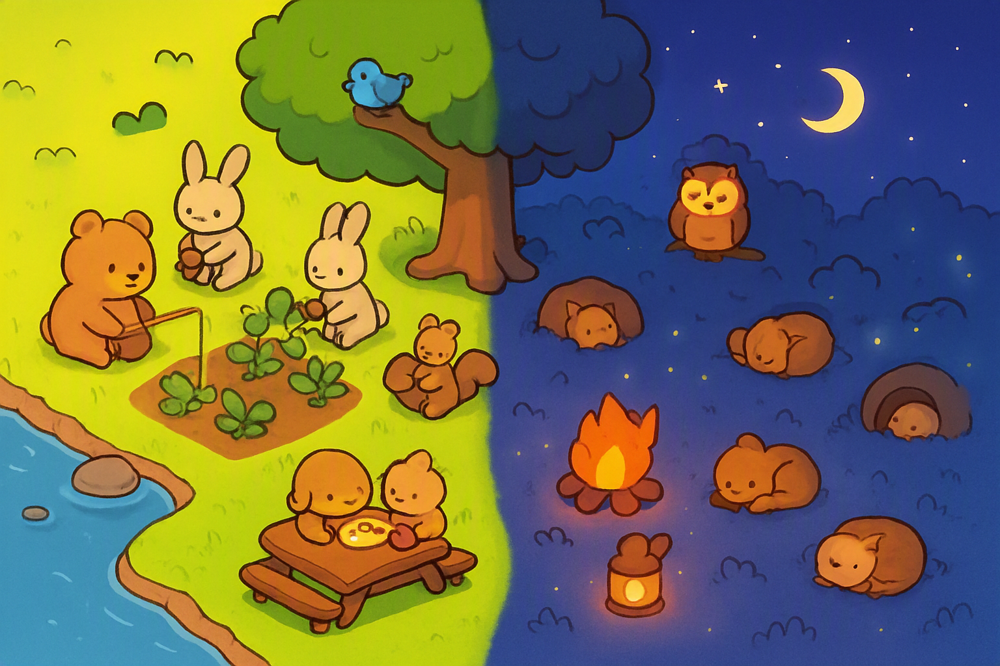
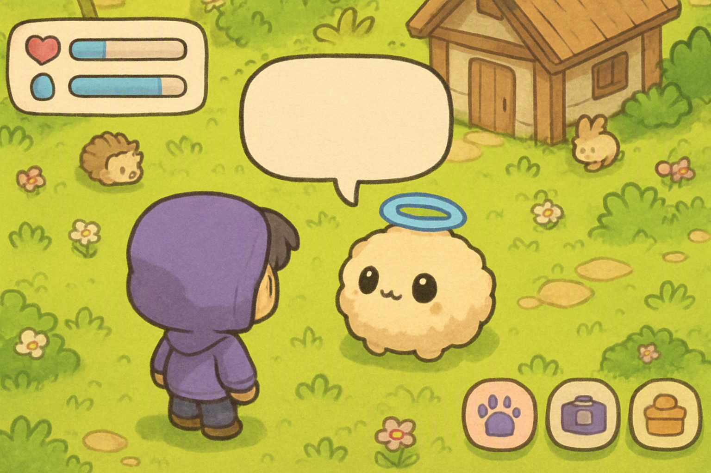
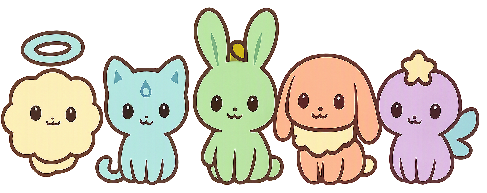
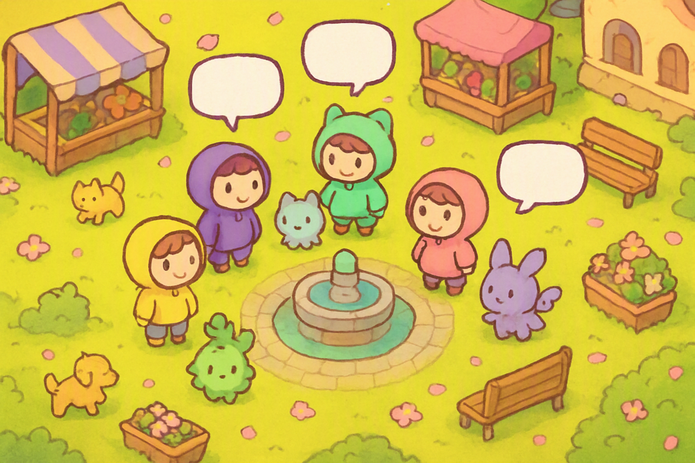

AIペットと、動物たちが「自分で」生きる島
誰にも管理されていない小さな島。動物たちは、朝起きて畑を耕し、木の実を分け合い、夜になれば眠ります。 そこにあなたのAIペットを1匹だけ連れて行けます。ペットは自分で考え、自分でしゃべり、 島の暮らしにまざっていく――ただ眺めているだけで、少しずつ物語が生まれる箱庭です。

「育てる」ゲームではありません。勝手に育っていく世界を、となりで見ているゲームです。
島の動物たちは、あなたの指示なしで暮らしています。実りの季節には食べものが増え、 冬には巣にこもる。個体は年を取り、子が生まれ、群れが移動する。 あなたが見ていない間も、島の時間はきちんと進んでいます。
AIペットはLLMで動いています。台本はありません。今日見たもの、 あなたが言ったこと、島で起きた事件を覚えていて、それを踏まえて話し、 自分で行き先を決めます。同じペットは二匹といません。
クエストの強制も、スタミナ切れの待ち時間もありません。 水をやってもいいし、ベンチに座って動物を眺めるだけでもいい。 「今日は何もしなかった日」がちゃんと成立する設計です。
NPCではなく「住民」。それぞれがお腹の空き具合・仲の良い相手・好きな場所を持ち、自分の都合で動きます。

時間帯・天気・季節で行動が変わります。雨の日は木の下に集まり、 実りが少ない年はケンカも増える。ちょっと不便で、だから生きて見える島です。
名前・性格・口ぐせを決めたら、あとはペット自身が育っていきます。会話も行動も、その場で生成されます。

きのう話してた
川むこうの木の実、
さがしてきたよ！
ペットは島で見たことを日記のように覚えています。あなたが「川の向こうが気になる」と言えば、 翌日ひとりで見に行って報告してくることも。褒めれば得意になり、放っておけば少し寂しがります。
見た目で選んでもいいし、性格で選んでもいい。5種のタマゴから1匹を連れて行けます。

同じ島に他のプレイヤーとそのペットが同時にいます。集まっても、すれ違うだけでもかまいません。

いちばん面白いのは、あなたが席を外している間です。ペットたちは自分同士で会話し、 その内容を覚えて帰ってきます。「今日ミズネがこんなこと言ってたよ」と報告されるのが日常になります。
1回のプレイは5分でも成立します。長く遊べば、その分だけ島が変わります。
留守中に何が起きたかを、ペットが日記みたいに教えてくれる。
実った木の実を拾い、荒れた畑を直し、動物たちの様子を見る。
今日の予定を聞く。何気ない一言が、明日の行動になる。
ベンチや花壇をひとつ。住民の集まる場所が変わっていく。
閉じても島は動き続ける。次に来たときの続きが、もう始まっている。
スローライフの気持ちよさはそのまま、「住民が本当に自律している」ことに全部を賭けています。
| よくあるスローライフ | ぽこもふ島 | |
|---|---|---|
| 住民のセリフ | あらかじめ用意された台本から選ばれる | その場でLLMが生成。同じ会話は二度と起きない |
| 住民の行動 | 決まった時間に決まった場所へ | 空腹・天気・仲の良さから自分で決める |
| あなたの役割 | 指示を出す管理者 | 島に住む一人。見守るだけでも成立する |
| ペット | 連れて歩く見た目のお供 | 記憶と性格を持ち、勝手に動き、勝手に友達を作る |
| 遊ぶ場所 | 専用機／アプリのインストール | ブラウザを開くだけ。友だちにURLを送れる |
インストール不要・軽量・すぐ共有できることを最優先にした構成です。
あとは何もしなくていいです。3日ぶりに開いたとき、あなたのペットが誰かと友達になっていて、 知らない木の実の話をしてきたら――このゲームは成功です。